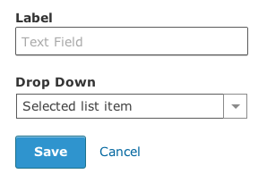
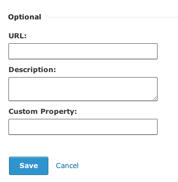
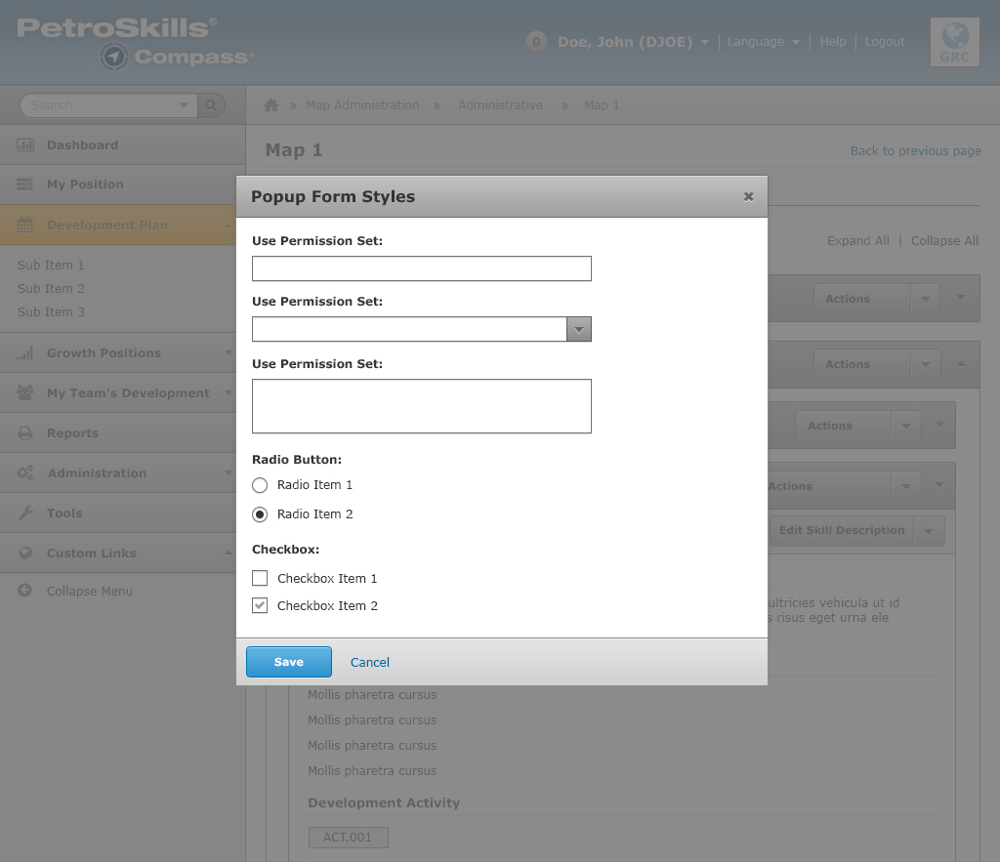

Forms
Please refer to the instructions below how to design and structure your forms. They need to be consistent with Petroskills' digital brand and style guidelines.
Inputs are full width by default and will run as wide as the column that contains them. However, you have two options to adjust the width of the input field:
- You can size inputs using column sizes, like .six.
- You can create row elements inside your form and use columns for the form, including inputs, labels and more. Rows inside a form inherit some special padding to even up input spacing.
Refer below to see more specific examples of form layouts.
Top-Aligned Form
Below is the default form layout. This is a top label aligned form, where the labels are placed above the input field. See below:

Fieldsets
Below is an example of a form placed inside a Fieldset element. This is used to create a division or space out forms from other elements or content.

Error States
Every form and form field must specify and be visual to the user if there is an error to a form.
Form errors must occur when it is required. Examples would be:
- Your [form field] must not be blank.
- Your [form field] must have a name.
- Your [form field] must have a password.
You attach a class of .compass-error to the individual elements: label, input, small.

Radio Buttons and Checkboxes
Below are extra input fields to help with designing forms.
Popup Forms
Below is a screenshot that showcases a form inside a pop-up.

Note: This is a high-fidelity mockup (not a real representation of what it would look like in the browser).
Creating Compass Forms
General
Use a single form tag. ALL FORMS need the class custom to be used.
<form class="custom">
- Use fieldsets to group controls into sections
- Use legends to label fieldsets
Semantics
Use the structure:
<div class="row">
<div class="form-group [X] mobile-[Y] columns">
[block]
</div>
</div>
where [block] is a display on the form. for example:
<label for="checkbox11"><input type="checkbox" CHECKED id="checkbox11"> Bowen, Jenny (JBNX)</label>
or
<label>Start Date</label>
<input class="control-with-icon-after" type="text" placeholder="" value="03/28/2013"/>
<a class="icon-after-field input" href"#"></a>
- [X] is the number of columns for display, usually "six"
- [Y] is the number of columns for mobile device display, usually "four"
Dropdown Control
Compass uses a custom dropdown control for display:
<select class="custom-dropdown" id="customDropdown">
<option SELECTED>Gap Analysis</option>
<option>Gap Analysis 2</option>
<option>Gap Analysis 3</option>
</select>
<div class="custom dropdown expand">
<a href="#" class="current">
Gap Analysis
</a>
<a href="#" class="selector"></a>
<ul>
<li>Gap Analysis A </li>
<li>Gap Analysis B</li>
<li>Gap Analysis C</li>
</ul>
</div>
the first section is a standard select tag as you would see in regular HTML
<select class="custom-dropdown" id="customDropdown">
<option SELECTED>Gap Analysis</option>
<option>Gap Analysis 2</option>
<option>Gap Analysis 3</option>
</select>
remember to use class="custom-dropdown" this will add the display: none style to hide this from being displayed. If two drop downs are visisble this is usually why. the second section is a div that is used to display the dropdown on the page.
<div class="custom dropdown expand">
<a href="#" class="current">
Gap Analysis
</a>
<a href="#" class="selector"></a>
<ul>
<li>Gap Analysis A </li>
<li>Gap Analysis B</li>
<li>Gap Analysis C</li>
</ul>
</div>
The div wrapper supports an optional size component - small, medium, large, and expand are the available sizes. Usually expand is the value you will want to use.
Option (Checkbox) and Radio buttons
General
We want the default OS Radio and Option button even when used in a custom form. There is an undocumented feature in Zurb that will allow the use of the default OS controls. When adding an option or radio button add the attribute:
data-customforms="disabled"
This will mark the control to be skipped when Zurb is adding the custom form controls.
For example:
<label for="checkbox5">
<input data-customforms="disabled" type="checkbox" CHECKED id="checkbox5">
Generate sections for each Group
</label>
will produce a standard checkbox in a custom form.
Button Groups
When you have two or more checkboxes or radio buttons use:
<div class="radio-group"> or
<div class="checkbox-group">
these wrappers will allow for grouping and formatting a group of controls associated with each other.
Events
Zurb changes the events in some cases when the Zurb custom controls are used. Particularly the onClick() or Click() events. Zurb wraps the control in a <div> or <span> tag and when the user clicks on the <div> or <span> the click event is not propagated to the wrapped control. Zurb also explicitly stops event propagation.
This means when using a custom control you can not rely on the click event for the wrapped control. The Zurb controls do propagate the change() event and you can reliably rely on that event firing when the custom controls are updated.
This will not affect us for most controls as we use the default OS controls. However, because we use the custom Dropdowns the click event for the drop down is not fired and you must use the change event for the custom dropdowns or the click event for the Zurb control wrapper.
Special Formatting
There are three classes used to associate a control with the contral above it. class="with-above-small", class="with-above", class="with-above-large" will remove 8, 15, or 20px from the top margin respectively.
Labels in a form-group are defaulted to *bold* while labels in a radio-group or checkbox-group default to normal weight. To over-reide a bold label and use normal font weight the class="plain" is available.
Examples